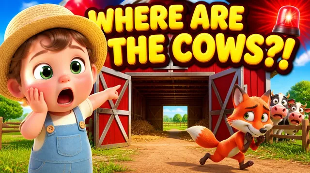
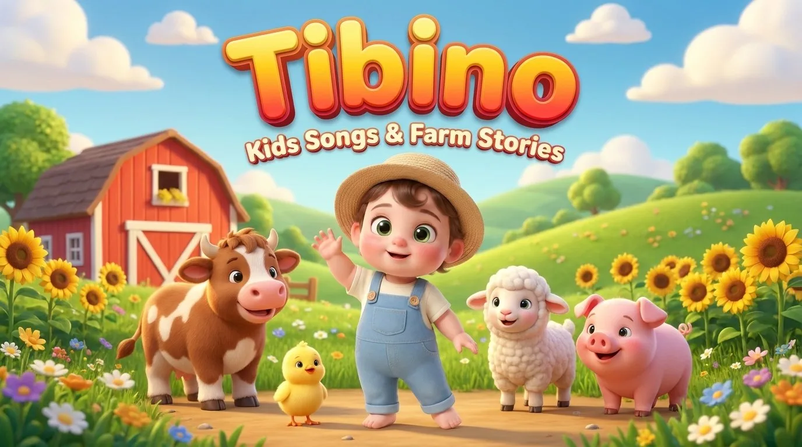

3:02
New songs every week
Colorful 3D nursery rhymes and farm rescue stories your little one will sing along to — on repeat.
The happiest little farm
Tibino is a kind little farmer who loves to sing. Whenever something goes missing on the farm, Tibino and the barnyard friends set out on a gentle adventure to save the day. Every story ends with a happy song and a big sing-along.
Made with care
Gentle, age-appropriate fun you can feel good about pressing play on.
Animal sounds, counting, colors and kindness woven into every song — screen time that teaches.
Marked "Made for Kids" (COPPA compliant), calm pacing, zero scary content — just warm, happy stories.
Simple, catchy melodies with call-and-response — designed for toddlers to move, clap and join in.
From Tibino's blog
Free lyrics, printables and gentle parenting tips — one post per song.
The complete lyrics plus 3 hands-on activities to make the song even more fun at home.
Why nursery rhymes with animal sounds are speech therapists' favorite recommendation.
The science behind why repetitive songs matter for early brain development.